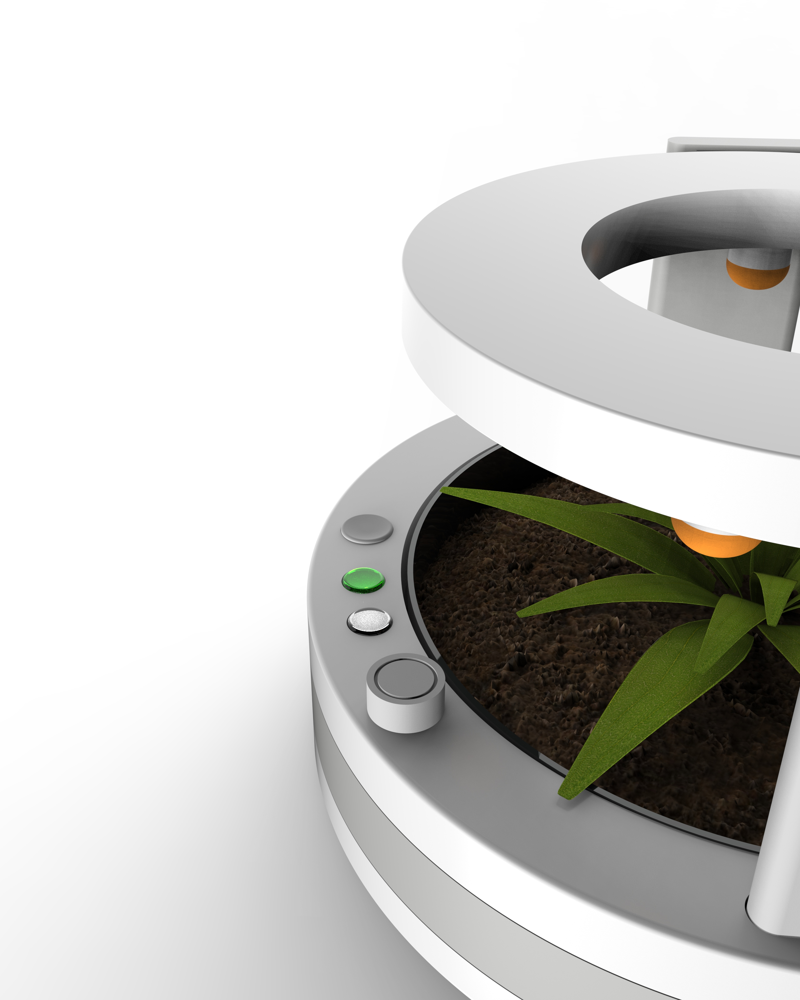
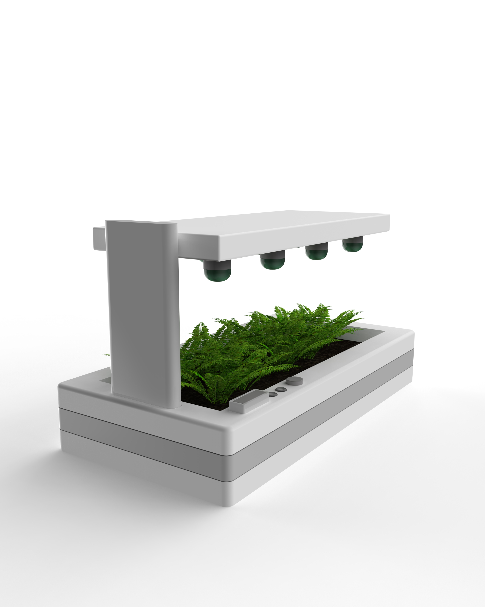
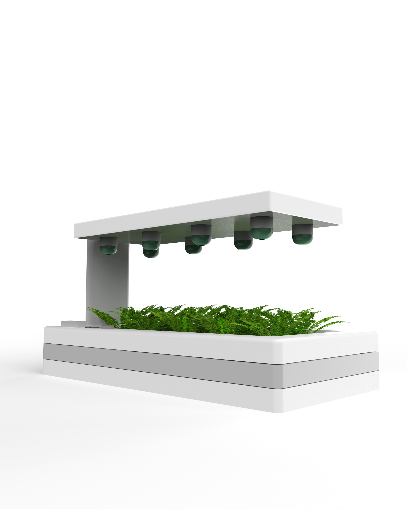

Problem
Caring for indoor plants requires consistency, knowledge, and routine — elements that many users struggle to maintain in their daily lives. Irregular watering, lack of understanding of plant needs, and periods of absence often result in unhealthy or dying plants.
Users frequently overwater or underwater their plants due to uncertainty, while also lacking real-time feedback about the plant’s condition. As a result, maintaining indoor plants becomes a stressful and unreliable experience rather than an enjoyable one.


The system delivers water according to a predefined weekly schedule tailored to the plant’s requirements. With a single refill lasting up to 10 days, SmartPlanter minimizes user effort while maintaining consistent hydration.


For extended absences, the system can be paused using the power button. This allows the soil to retain its natural moisture, ensuring the plant remains supported even when the device is not actively operating.
SmartPlanter is not just a watering device — it's a supportive system that works in harmony with the plant's natural rhythm. Integrated LED indicators provide clear, intuitive feedback: green light indicates a sufficient water level, while red light signals a low or empty water tank.